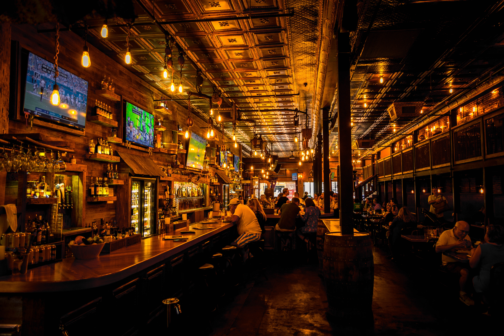

Some Of Our Favourites
Here is the list of some of our favourite locations to visit from Seattle. They are ranked highly popular and have great reviews.
These popular weekend getaways are all close to downtown Seattle. Each of them offers a diverse set of things to do based on your interests.
Check them out here 🠢Choose Your Type Of Getaway
We have curated a list of getways from Seattle for you to choose from based on your interests or type of activity. Check them out by category to gain more information on these destinations.
Seattle, being an amazing city in itself, also has amazing destination within few hours from the city. We have tried to make your decision making process easier by splitting destinations into categories such as outdoors, staycation, hiking and nightlife.
- Outdoors
- Staycation
- Hiking
- Nightlife
Enjoy the outdoors while picnicking, basking in the sun, eating at your favourite outdoorsy cafe, sightseeing and much more.
 Check them out here
🠢
Check them out here
🠢
Plan a staycation in these peaceful homes, cottages or tree houses amidst the city or away from the city life. Choose based on your interests. Take a look at the most recommended accomodations.
 Check them out here
🠢
Check them out here
🠢
In a mood for wearing your hiking boots? Check these famous hiking locations with beautiful views for your next hike trip.
 Check them out here
🠢
Check them out here
🠢
Enjoy a few drinks with friends, watch a soccer game or simply dance your worries away with these clubs, brewries in and around the city.
 Check them out here 🠢